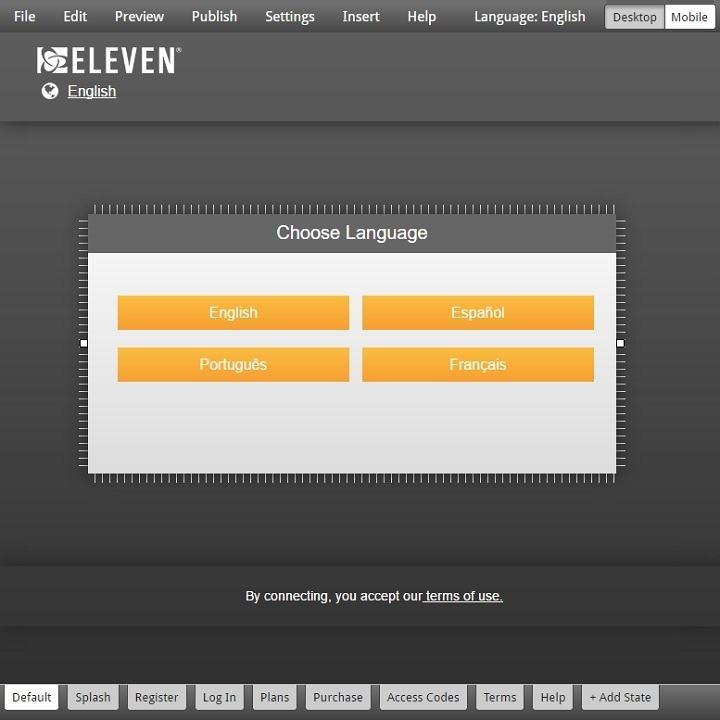
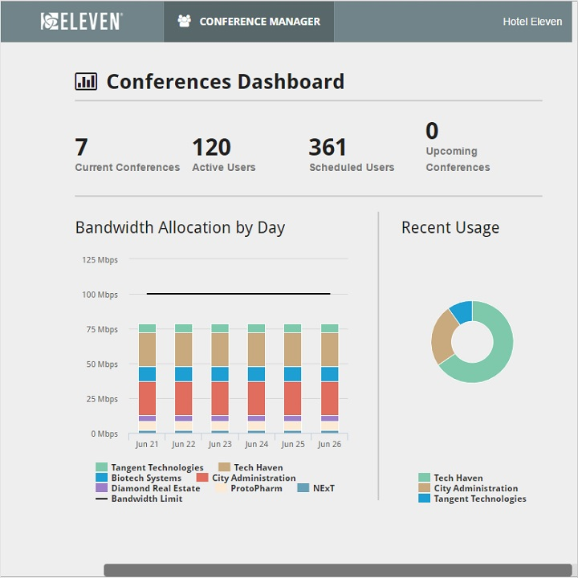
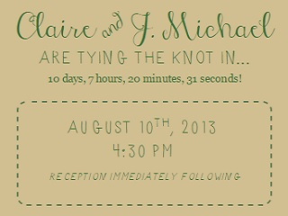

Yep, my name really is just J. (No, it doesn't stand for anything.)
How I got here:
When I was much younger, I was a dancer, which led to an interest in music and sound, then film and photography, and now most recently software development.
I've participated in all aspects of the development lifecycle as a web developer, software engineer, and Scrum Master.
My experience as Scrum Master has framed my view of software development to always focus on delivering
business value above all else. I value reviews, feedback, and iterating on a design to improve the product. Now, I hope to
refocus my career on the challenging and personally rewarding aspects of being a software engineer.
What guides my work:
I believe the best interfaces are simple, clean, and intuitive (and I think reading code should be the same).
Good design goes without being noticed and users should understand how an interface works without much instruction.
My StrengthsFinder results:
Consistency - I believe everyone should know and play by the same rules
Empathy - I can put myself into other people's shoes and understand what motivates them
Adaptability - I handle new situations in stride and can change course if needed
Analytical - I take time to understand root cause of issues before making decisions
Harmony - I diffuse situations and prefer when everyone gets along
What else interests me:
Basketball - Go Blazers!
Cycling - My goal is to ride from Hillsboro to the coast
Road Trips - I prefer driving over flying
Content Management System
I added multilingual support, responsive editing modes, page states and other features to this WYSIWYG CMS editor built with jQuery

Conference Tool
I contributed form validation, custom date formatting, and recurring meeting scheduling to this Conference Tool built with AngularJS

Wedding Website
I built this static site to inform our wedding guests of scheduling, local info, and photo galleries, styled to match our wedding invitations and theme

This Portfolio
I built this portfolio site as a basic example of my vanilla HTML, CSS, JS skills. I intentionally included no libraries (although I did add google analytics) and made sure to include page state, mobile responsiveness and touch target optimization. Go ahead and view source!